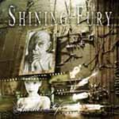

|
|
||
Shining Fury : Another Life (2006) |
|

http://www.shiningfury.com |
1. Another Life 5:01 |
7.2/10 |
|
Another Life es el segundo disco de la banda italiana Shining Fury, liderada por el cantante de Athena, Francesco Neretti, y que ha cambiado prácticamente todos sus miembros, dos guitarristas y un bajista nuevos, desde su debut. El disco es en general rápido con el doble bombo como firme puntal de la voz de Francesco, fuerte y de textura interesante, en "Another Life", de estribillo pegadizo, "Fast and Easy", "Colours and Experience", "Together", con un frenético solo de guitarra, "Eternal Fight", con unos coros que aportan cierta variedad y "Five years Ago". También hay temas de ritmos cambiantes como "The Haunting", pieza de atmósfera inquietante que alterna entre un tiempo medio y un doble bombo algo contenido, parecida a "Neither Words Nor Kisses", aunque aquí el doble bombo cuando aparece lo hace con toda su fuerza, o "Dr. Jekyll and Mr. Hyde", con sus potentes guitarras muteadas estilo thrash metal. El disco lo cierra un aceptable cover del tema de Deep Purple "Highway Star", que le da un aire clásico a la banda. Técnicamente impecable, este disco está formado por un puñado de canciones demasiado uniformes que dejan poco para recordar por muchas oportunidades que se les den. Sólo me atrevería a recomendarlo a fans de Francesco Neretti. |
||
- Crítica escrita por Rubén Béjar - |
||